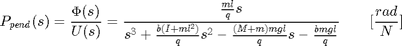
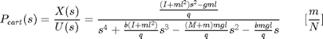
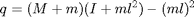
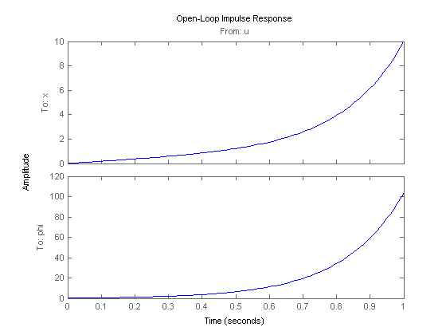
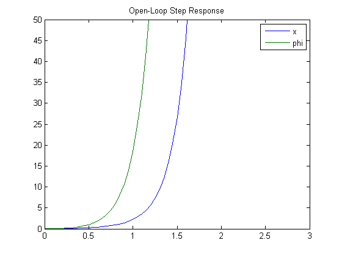

Inverted Pendulum: System Analysis
Key MATLAB commands used in this tutorial are: tf , ss , zpkdata , impulse , lsim
Contents
From the main problem, we derived the open-loop transfer functions of the inverted pendulum system as the following.
(1)
(2)
where
(3)
Recall that the above two transfer functions are valid only for small values of the angle phi where is the deviation of the pendulum from the vertically upward position. Also, the absolute pendulum angle is equal to + .
For the original problem setup and the derivation of the above transfer functions, please refer to the Inverted Pendulum: System Modeling page.
Considering the response of the pendulum to a 1-Nsec impulse applied to the cart, the design requirements for the pendulum are:
- Settling time for of less than 5 seconds
- Pendulum angle never more than 0.05 radians from the vertical
Additionally, the requirements for the response of the system to a 0.2-meter step command in cart position are:
- Settling time for and of less than 5 seconds
- Rise time for of less than 0.5 seconds
- Pendulum angle never more than 20 degrees (0.35 radians) from the vertical
Open-loop impulse response
We will begin by looking at the open-loop response of the inverted pendulum system. Create a new m-file and type in the following commands to create the system model (refer to the main problem for the details of getting these commands).
M = 0.5; m = 0.2; b = 0.1; I = 0.006; g = 9.8; l = 0.3; q = (M+m)*(I+m*l^2)-(m*l)^2; s = tf('s'); P_cart = (((I+m*l^2)/q)*s^2 - (m*g*l/q))/(s^4 + (b*(I + m*l^2))*s^3/q - ((M + m)*m*g*l)*s^2/q - b*m*g*l*s/q); P_pend = (m*l*s/q)/(s^3 + (b*(I + m*l^2))*s^2/q - ((M + m)*m*g*l)*s/q - b*m*g*l/q); sys_tf = [P_cart ; P_pend]; inputs = {'u'}; outputs = {'x'; 'phi'}; set(sys_tf,'InputName',inputs) set(sys_tf,'OutputName',outputs)
We can now examine the open-loop impulse response of the system. Specifically, we will examine how the system responds to an impulsive force applied to the cart employing the MATLAB command impulse. Add the following commands onto the end of the m-file and run it in the MATLAB command window to get the associated plot shown below.
t=0:0.01:1;
impulse(sys_tf,t);
title('Open-Loop Impulse Response')
 As you can see from the plot, the system response is entirely unsatisfactory. In fact, it is not stable in open loop. Although the pendulum's position is shown to increase past 100 radians (15 revolutions), the model is only valid for small . You can also see that the cart's position moves infinitely far to the right, though there is no requirement on cart position for an impulsive force input.
The poles of a system can also tell us about its time response. Since our system has two outputs and one input, it is described by two transfer functions. In general, all transfer functions from each input to each output of a multi-input, multi-output (MIMO) system will have the same poles (but different zeros) unless there are pole-zero cancellations. We will specifically examine the poles and zeros of the system using the MATLAB function zpkdata. The parameter 'v' shown below returns the poles and zeros as column vectors rather than as cell arrays.
The zeros and poles of the system where the pendulum position is the output are found as shown below:
[zeros poles] = zpkdata(P_pend,'v')
zeros =
0
poles =
5.5651
-5.6041
-0.1428
Likewise, the zeros and poles of the system where the cart position is the output are found as follows:
[zeros poles] = zpkdata(P_cart,'v')
zeros =
4.9497
-4.9497
poles =
0
5.5651
-5.6041
-0.1428
As predicted, the poles for both transfer functions are identical. The pole at 5.5651 indicates that the system is unstable since the pole has positive real part. In other words, the pole is in the right half of the complex s-plane. This agrees with what we observed above.
Open-loop step response
Since the system has a pole with positive real part its response to a step input will also grow unbounded. We will verify this using the lsim command which can be employed to simulate the response of LTI models to arbitrary inputs. In this case, a 1-Newton step input will be used. Adding the following code to your m-file and running it in the MATLAB command window will generate the plot shown below.
t = 0:0.05:10; u = ones(size(t)); [y,t] = lsim(sys_tf,u,t); plot(t,y) title('Open-Loop Step Response') axis([0 3 0 50]) legend('x','phi')
You can also identify some important characteristics of the response using the lsiminfo command as shown.
step_info = lsiminfo(y,t); cart_info = step_info(1) pend_info = step_info(2)
cart_info =
SettlingTime: 9.9959
Min: 0
MinTime: 0
Max: 8.7918e+21
MaxTime: 10
pend_info =
SettlingTime: 9.9959
Min: 0
MinTime: 0
Max: 1.0520e+23
MaxTime: 10
The above results confirm our expectation that the system's response to a step input is unstable.
It is apparent from the analysis above that some sort of control will need to be designed to improve the response of the system. Four example controllers are included with these tutorials: PID, root locus, frequency response, and state space. You may select a choice from the menu to the left for further details.
Note: The solutions shown in the PID, root locus, and frequency response examples may not yield a workable controller for the inverted pendulum problem. As stated previously, when we treat the inverted pendulum as a single-input, single-output system, we ignore the position of the cart, . Where possible in these examples, we will show what happens to the cart's position when a controller is implemented on the system.